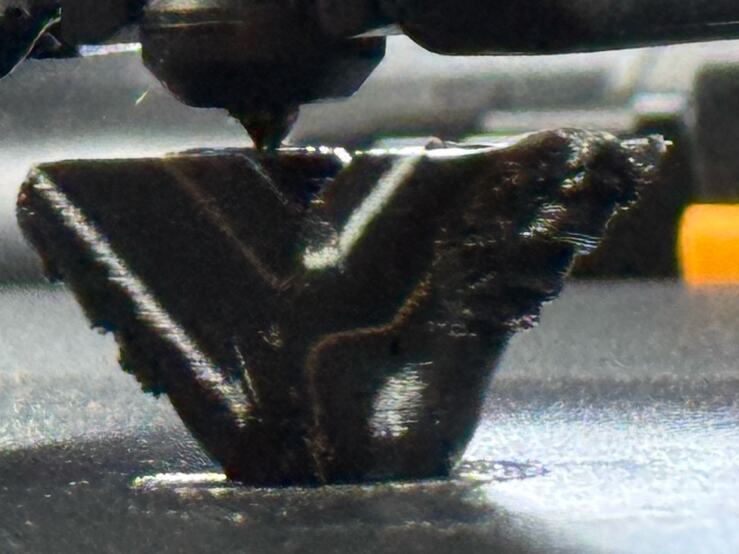

Two brands
Two brands, one hardness.
Two spools both say 85A. One curled its lips on three elbows in an evening. The other printed them clean at its first try, an hour after the last. Six things changed between those two prints, and nobody has gone back to find out which one mattered.
Seen in Bambu TPU 85A and Siraya TPU 85A · Mark 1 · glued Engineering Plate, no Z trim · right 0.6 mm nozzle

| 13 October 21:09 | 21:45 | 23:05 | 14 October 00:11 | |
|---|---|---|---|---|
| Spool | Bambu TPU 85A, black | Bambu TPU 85A, black | Bambu TPU 85A, black | Siraya Tech Flex TPU 85A, clear |
| Opened | earlier | earlier | earlier | that night |
| Nozzle after the first layer | 225 °C | 225 °C | 215 °C | 215 °C |
| Lip speed that ran, mm/s | 14.6 to 17.6 | 15.8 to 21.8 | 15.8 to 21.8 | 10.0 |
| Flow ratio | 1.00 | 1.00 | 1.00 | 0.96 |
| Auxiliary fan | 100% | 100% | 100% | off |
| Retraction | 1.0 mm | 1.0 mm | 1.0 mm | 0.8 mm |
| The lips | curled | rough | curled the same | clean |
Bold marks a change from the print before. The same model, printer, nozzle, plate, layers, six walls and full part fan throughout.
“You sure you don’t want to try 215? That is within their range and we’re already lowering the speed from their profile.”
What is known
Heat alone is not it: the third black elbow ran at the same 215 °C and curled. The clear recipe has since printed the pair that went on the pump, on Mark2 on 22 October. Black Bambu 85A printed the faucet sleeve on 23 October, which has no leaning lip, and it “came out pretty well”.
What we do
Elbows print in the clear Siraya on its whole recipe. Sleeves and gaskets print in black Bambu. Neither choice is a verdict on a brand.
Still openWhich change ended the curl. The print that would say is one black Bambu elbow, alone, with its lip checked at 10 mm/s. That file was prepared on 13 October and never sent. Black pairs printed at a checked 10 on 15 and 16 October, for the string trials. Nobody judged their lips.
Still openWater in the spool. The black spool went into the dryer after its three curled prints, and whether the cycle finished is not recorded. The clear one came out of a sealed bag.
Still openThe seal. “Seal seems as good as before” names no pressure and no time. The elbows have not been held at pressure and watched.